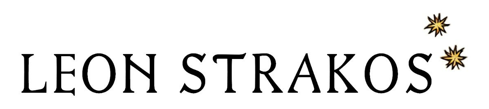
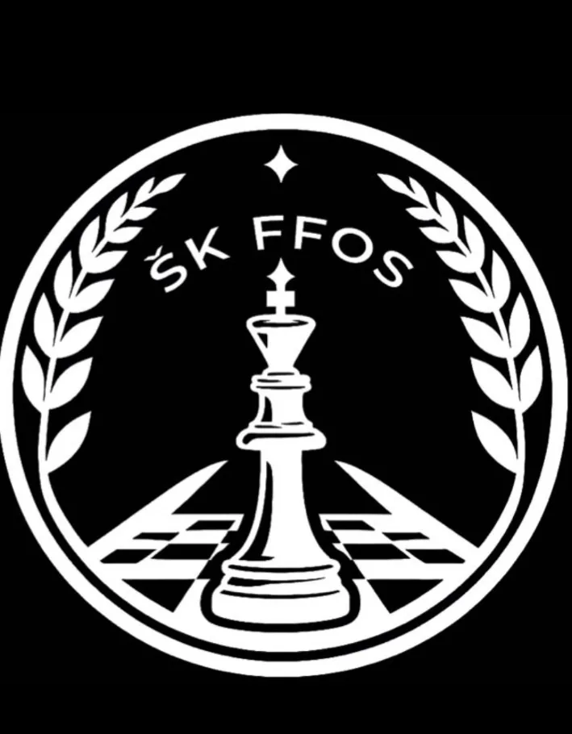
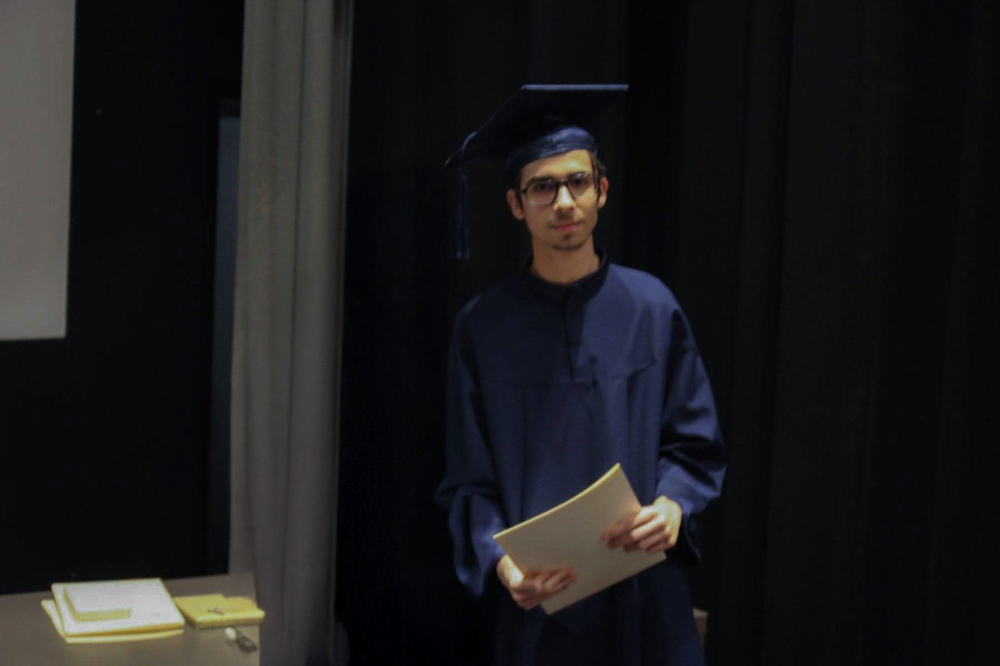
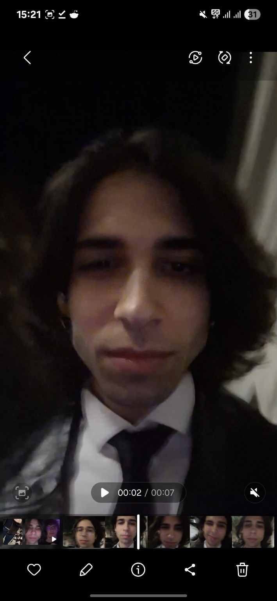
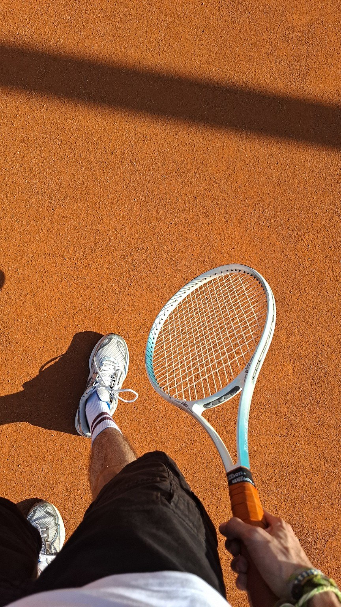
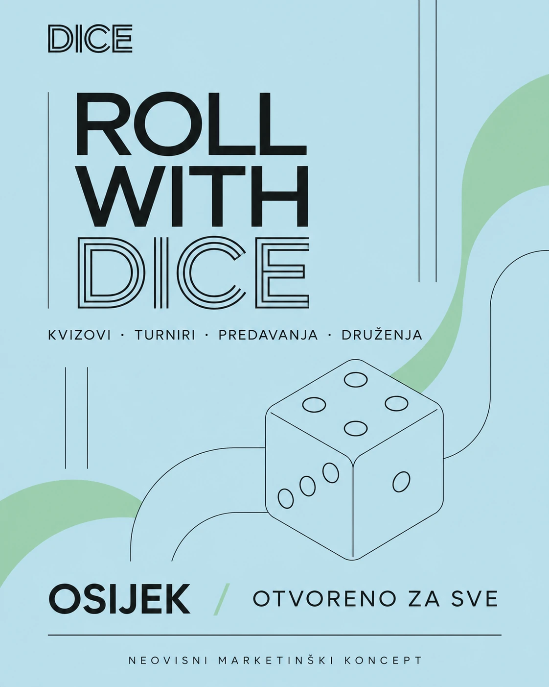

Leon Strakoš

Programiranje i originalni vibe code projekti
Web-aplikacije i digitalni proizvodi.
Izdavaštvo
PRINT / KICKSTARTER / CARTAMUNDIIskustvo
Rad s ljudima i komunikacija jednako su važan dio mog iskustva kao digitalni projekti.
Poučavanje jezika djeci
Predavanje stranih jezika djeci vrtićke dobi u pučkom učilištu. Priprema aktivnosti i prilagodba komunikacije uzrastu skupine.
Engleski i hrvatski za strance
Podučavanje engleskog i hrvatskog jezika međunarodnim studentima i misionarima u Osijeku.
Knjižnica Požega
Rad na Odjelu za mlade i multimediju u knjižnici u Požegi.
Čitaj, lega, čitaj!
Rad na sajmu u okviru projekta „Čitaj, lega, čitaj!” s književnicom Ivanom Šojat.
Šahovski klub i Grand Chess Tour
Osnivanje šahovskog kluba na Filozofskom fakultetu, vođenje šahovskih aktivnosti i sudjelovanje u vođenju turnira Grand Chess Tour u Zagrebu s Garryjem Kasparovom.
Grand Chess Tour 2024 ↗
Chivas Regal event — Milano
Sudjelovanje na događanju Chivas Regal u Milanu 1. rujna, uz Charlesa Leclerca i ambasadora Rhysa Wilsona.
Chivas × Charles Leclerc — SE!ZE ↗Samostalni modni koncepti, logotip, vizualni sustav, tipografija i grafička priprema.
Koordinacija volontera i timova, organizacija događanja, pokretanje studentskih inicijativa, javni nastup te prilagodba komunikacije djeci, studentima i međunarodnim skupinama.
O meni


Nakon klasične gimnazije, završio sam informacijske znanosti te ove jeseni diplomirao (IKT) informacijske tehnologije i komunikacije te Nakladništvo. Radio sam na digitalnim projektima, u studentskim udrugama, knjižnici i podučavanju jezika. U slobodno vrijeme se bavim sportovima poput šaha, tenisa i plesa te se bavim modelingom i fotografijom.
Preddiplomski: informacijske znanosti\nDiplomski: informacijske tehnologije i nakladništvo
Hrvatski · engleski (tečno)\nStudirao japanski i kineski; osnove drugih jezika
Marketing događanja, community management, UX/UI, izdavaštvo, vizualni identitet
Osijek · Split, Hrvatska

Vještine i alati.
Digitalni dizajn i produkcija sadržaja, razvoj aplikacija.
Grafički dizajn
Obrada i retuširanje fotografija, izrada promotivnih vizuala, kompozicija i grafičkih materijala.
Videomontaža
Uređivanje videozapisa, izbor i slaganje kadrova, prijelazi i priprema materijala za digitalne kanale.
Fotografija
Fotografiranje događanja i proizvoda, odabir kadrova, obrada fotografija i vizualna dokumentacija.
Vizualni identitet i tisak
Logotipi, tipografija, vizualni sustavi, ambalaža i grafička priprema izdavačkih projekata.
Digitalni proizvodi
Web-razvoj, dizajn sučelja, razvoj aplikacija te praktična primjena SEO-a i digitalnih komunikacijskih sustava.
Komunikacija i događanja
Planiranje i promocija događanja, vođenje kvizova, koordinacija volontera i rad s međunarodnim skupinama.
ROLL
WITH DICE
Prvi korak prema jačoj prisutnosti DICE-a u Osijeku i povezivanju tvrtke s lokalnom zajednicom.
Roll with DICE zamišljen je kao početak dugoročnog jačanja DICE-ove prisutnosti u lokalnoj zajednici. Otvorena, pristupačna događanja povezuju zaposlenike, studente i ostale Osječane, a fotografije, videozapisi i objave nastavljaju komunikaciju i nakon susreta.
